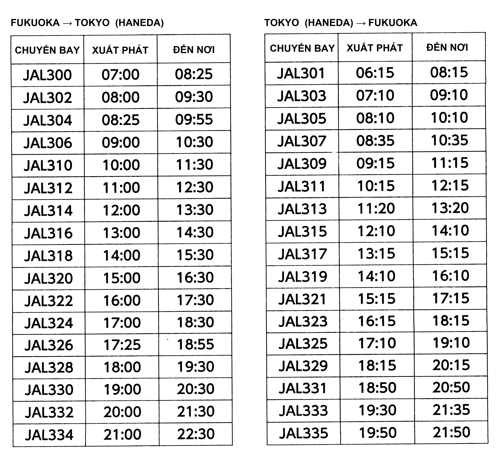

田中さんは 月曜日の 朝 福岡から 東京の 本社へ 行きます。
Tanaka đi đến trụ sở chính ở Tokyo từ Fukuoka vào sáng thứ hai.
本社の 会議は １０時から 5時までです。
Cuộc họp ở trụ sở chính diễn ra từ 10 giời đến 5 giờ.
本社から 空港まで JRで ３０分です。
Đi từ trụ sở chính bằng tàu JR đến sân bay mất 30 phút.
夜 福岡へ 帰ります。
Tối anh Tanaka sẽ trở về Fukuoka.
1. 何時の 飛行機で 行きますか。
Anh Tanaka đi chuyến máy bay lúc mấy giờ?
2. 何時の 飛行機で 帰りますか。
Anh Tanaka trở về chuyến máy bay lúc mấy giờ?

Đáp án:
1. 7:00
2. 18:15 18:50 19:30 19:50